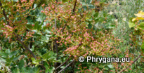

| PHRYGANA | Fauna | Flora |
additions nouveautés |
espèces species |
contact -
info - commentaires: phrygana1 (at) gmail.com |
| diversité crétoise -- Cretan diversity | |||||
| Cretan A N A C A R D I A C E A E de Crète |
|
|
|
 | |||
| Pistacia lentiscus | Pistacia terebinthus |
| 14 décembre 2010 |
| © paul fontaine -- © Phrygana.eu 2007 -- 2013 |